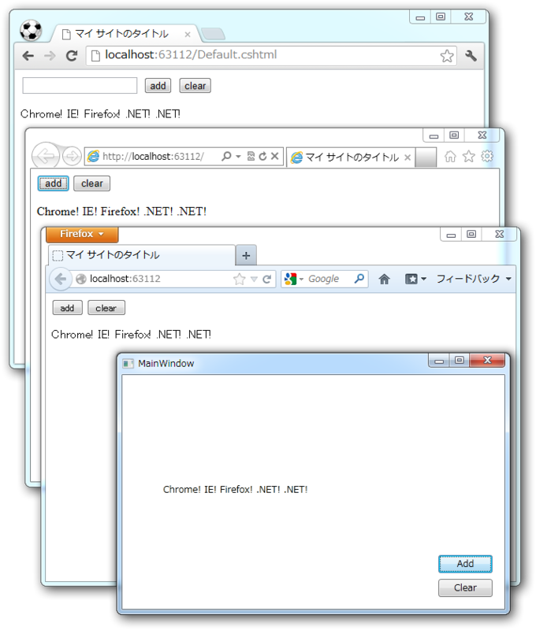

SignalR を .NET（WPF）からも使ってみた
公開日：
（SignalR 0.5.3 の）JavaScript のクライアントは .NET 向けの各種クライアントとほぼ同じ API となっています。
そういえば、前回（SignalR Deep Dive ! に参加してきた＋WebMatrix で SignalR 動かしてみた - だるろぐ）.NET から呼んでみるのを忘れてたよ。「ほぼ同じ」らしいのでこっちも試してみよう。
WPF アプリケーションを作って、 NuGet で SignalR.Client をインストール。 Hub （サーバー側）のコードは前回のそのまま。
public partial class MainWindow : Window { HubConnection connection; IHubProxy sample;public MainWindow() { InitializeComponent();
// サーバーに接続して sample ハブをげっと connection = new HubConnection("http://localhost:63112/"); sample = connection.CreateProxy("sample"); connection.Start(); /* この3つは順番を守ること！ */
// sample ハブで Echo() が呼ばれたら…… sample.On("Echo", data => // 返り値をもらって UI スレッドで textBox につっこむ Dispatcher.BeginInvoke( new Action(() => { textBox.Text = data; }) ) ); }
private void buttonAdd_Click(object sender, RoutedEventArgs e) { // sample Hub の Add() を呼ぶ sample.Invoke("Add", ".NET! "); }
private void buttonClear_Click(object sender, RoutedEventArgs e) { // sample Hub の Clear() を呼ぶ sample.Invoke("Clear"); } }
XAML は省略。ほんまに JavaScript の時と変わらないな。ただ、プロキシの取得と接続のスタートを逆にすると例外が発生する（JavaScript の場合は呼び出し順序はどっちでもいいみたい）。
